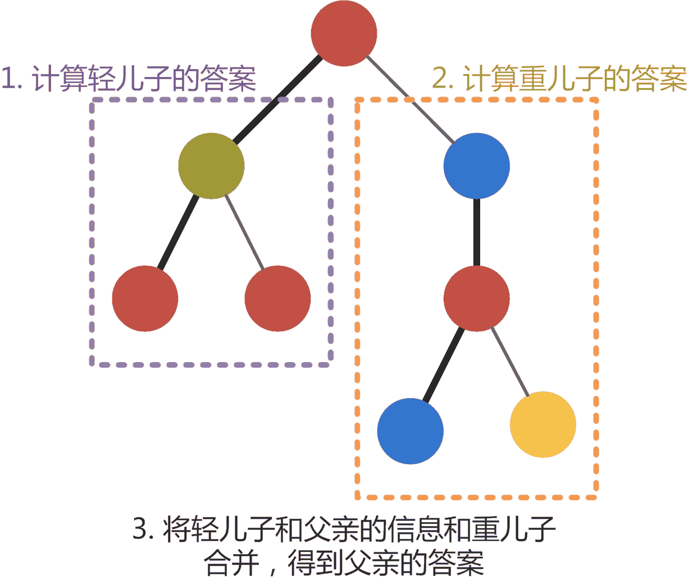
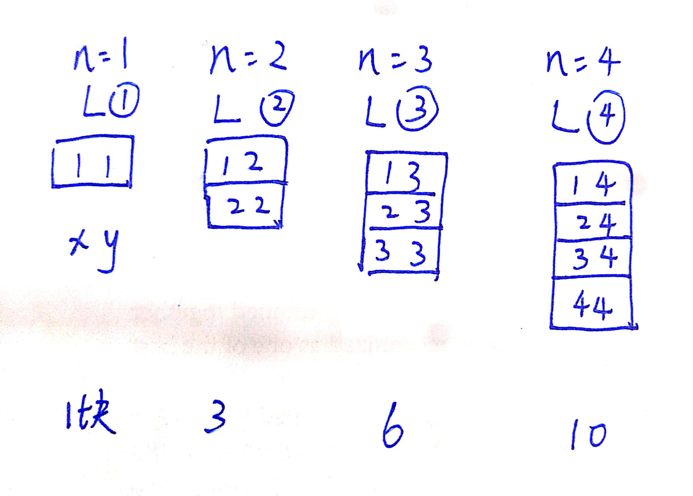
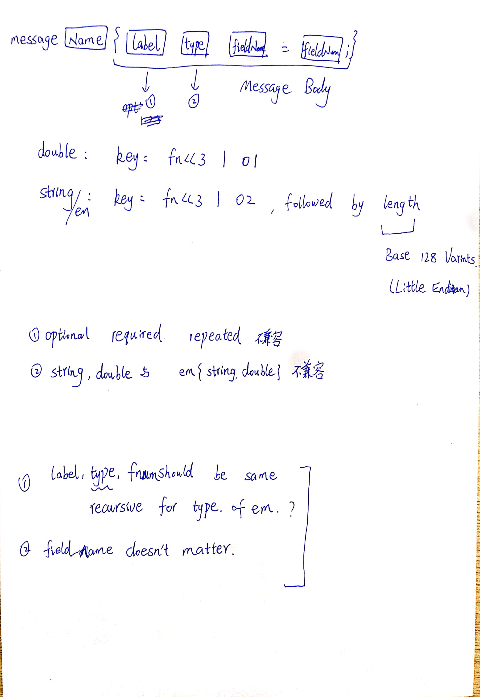
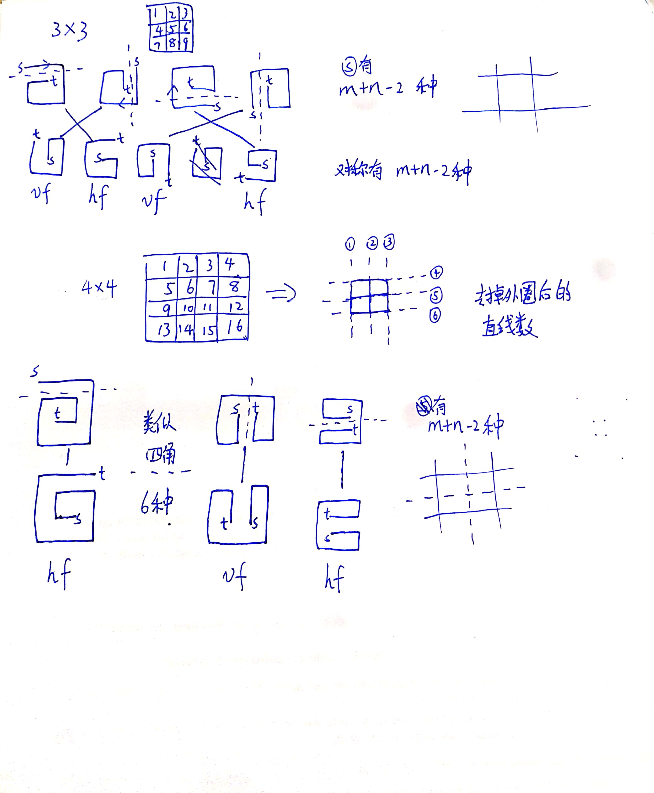

题目来源：CCPC 2019
退役两年半了还是这么蔡真是抱歉。。。
A.Kick Start（水、模拟）
题解：签到题，模拟，如果注意不到11th不是11st容易怒WA
#include <bits/stdc++.h>
typedef long long ll;
using namespace std;
#define mem(a,b) memset(a,b,sizeof(a))
#define rep(i,a,b) for(int i=a;i<b;i++)
string monthsStr[]={
"",
"Jan",
"Feb",
"Mar",
"Apr",
"May",
"Jun",
"Jul",
"Aug",
"Sept",
"Oct",
"Nov",
"Dec"
};
//1st 2nd 3rd ... 11th 12th 13th ... 21st 22nd 23rd ... 31st
map<string,int> months;
struct Date{
string month,date;
pair<int,int> realDate;
void init(){
cin>>month>>date;
realDate=make_pair(months[month],stoi(date.substr(0,date.size()-2)));
}
string toStr(){
return month+" "+date;
}
bool operator<(const Date&rhs)const{
return realDate<rhs.realDate;
}
};
int main()
{
#ifndef ONLINE_JUDGE
freopen("in.txt","r",stdin);
//freopen("out.txt","w",stdout);
#endif
for(int i=1;i<=12;i++) months[monthsStr[i]]=i;
int T; scanf("%d",&T);
for(int cs=1;cs<=T;++cs){
int n; scanf("%d",&n);
vector<Date> dates;
rep(i,0,n+1){
Date date;
date.init();
dates.push_back(date);
}
Date lst=dates.back();
dates.pop_back();
sort(dates.begin(),dates.end());
int ret=-1;
for(int i=0;i<dates.size();i++){
if(lst<dates[i]) {
ret=i;
break;
}
}
printf("Case #%d: ",cs);
if(ret==-1) puts("See you next year");
else cout<<dates[ret].toStr()<<"\n";
}
return 0;
}
E. Non-Maximum Suppression
题意：模拟非极大值抑制NMS，按IoU threshold去除重复的检测框。
题解：有生之年还能在算法比赛中见到CV的题，不愧是旷视！关于NMS的解释可以看这里
先来一发Test 5会超时的代码，注意如果没有满足题设strictly larger的条件，即加上1e-10的判断，会先在Test 4 WA：
#include <bits/stdc++.h>
typedef long long ll;
using namespace std;
#define mem(a,b) memset(a,b,sizeof(a))
#define rep(i,a,b) for(int i=a;i<b;i++)
const int MOD=1e9+7;
const int MAXN=1e5+10;
int width;
double th;
struct Box{
//bottom-left coord
int x,y;
double score;
inline void read(){
scanf("%d %d %lf",&x,&y,&score);
}
void toStr(){
cout<<x<<" "<<y<<" "<<score<<endl;
}
};
Box boxes[MAXN];
int idxs[MAXN];
double totalAera;
bool cmp(const int l,const int r){
return boxes[l].score>boxes[r].score;
}
inline bool intersect(const Box& l,const Box &r){
int ix=max(0,width-abs(l.x-r.x));
int iy=max(0,width-abs(l.y-r.y));
double ia=1.0*ix*iy;
//IOU>th,if overlap IOU=1
//there may be precision tricks
return ia-th*(totalAera-ia)>1e-10;
}
int main()
{
#ifndef ONLINE_JUDGE
freopen("in.txt","r",stdin);
//freopen("out.txt","w",stdout);
#endif
int T; scanf("%d",&T);
for(int cs=1;cs<=T;++cs){
int n; scanf("%d %d %lf",&n,&width,&th);
totalAera=1.0*width*width*2;
//there are different boxes with same score
for(int i=0;i<n;i++){
boxes[i].read();
idxs[i]=i;
}
sort(idxs,idxs+n,cmp);
//for(int i=0;i<n;i++) boxes[idxs[i]].toStr();
vector<int> ans;
queue<int> inqueueIndex;
for(int i=0;i<n;i++) inqueueIndex.push(idxs[i]);
while(!inqueueIndex.empty()){
int tp=inqueueIndex.front();
inqueueIndex.pop();
ans.push_back(tp+1);
int cnt=inqueueIndex.size();
while(cnt-->0){
int cur=inqueueIndex.front();
inqueueIndex.pop();
if(!intersect(boxes[tp],boxes[cur])){
inqueueIndex.push(cur);
}
}
}
printf("Case #%d: %d\n",cs,ans.size());
sort(ans.begin(),ans.end());
for(int &x:ans){
printf("%d ",x);
}
}
return 0;
}
优化策略：由于所有的BoundingBox的大小都是固定的，因此每次选择Box时，不需要和所有的Box进行IOU的计算，只需要计算当前Box周围的一圈（中心的最大L1距离为两个边长）即可，代码如下（耗时2.6s左右）：
#include <bits/stdc++.h>
typedef long long ll;
using namespace std;
#define mem(a,b) memset(a,b,sizeof(a))
#define rep(i,a,b) for(int i=a;i<b;i++)
const int MOD=1e9+7;
const int MAXN=1e5+10;
int width;
double th;
int dir[9][2]={
-1,-1,
-1,0,
-1,1,
0,-1,
0,0,
0,1,
1,-1,
1,0,
1,1,
};
struct Box{
//bottom-left coord
int x,y;
double score;
inline void read(){
scanf("%d %d %lf",&x,&y,&score);
}
void toStr(){
cout<<x<<" "<<y<<" "<<score<<endl;
}
};
Box boxes[MAXN];
int idxs[MAXN];
double totalAera;
bool vis[MAXN];
map<pair<int,int>,vector<int> > gridMap;
bool cmp(const int l,const int r){
return boxes[l].score>boxes[r].score;
}
inline bool intersect(const Box& l,const Box &r){
int ix=max(0,width-abs(l.x-r.x));
int iy=max(0,width-abs(l.y-r.y));
double ia=1.0*ix*iy;
//IOU>th,if overlap IOU=1
//there may be precision tricks
return ia-th*(totalAera-ia)>1e-10;
}
pair<int,int> getGrid(const Box& cur){
return make_pair(cur.x/width,cur.y/width);
}
void suppress(const Box& cur){
auto grid=getGrid(cur);
for(int i=0;i<9;i++){
auto nextGrid=make_pair(grid.first+dir[i][0],grid.second+dir[i][1]);
auto it=gridMap.find(nextGrid);
if(it!=gridMap.end()){
for(int x:it->second){
if(!vis[x] && intersect(cur,boxes[x])){
vis[x]=true;
}
}
}
}
}
int main()
{
#ifndef ONLINE_JUDGE
freopen("in.txt","r",stdin);
//freopen("out.txt","w",stdout);
#endif
int T; scanf("%d",&T);
for(int cs=1;cs<=T;++cs){
int n; scanf("%d %d %lf",&n,&width,&th);
totalAera=1.0*width*width*2;
//there are different boxes with same score
for(int i=0;i<n;i++){
boxes[i].read();
idxs[i]=i;
vis[i]=false;
}
sort(idxs,idxs+n,cmp);
//for(int i=0;i<n;i++) boxes[idxs[i]].toStr();
vector<int> ans;
gridMap.clear();
for(int i=0;i<n;i++){
int idx=idxs[i];
pair<int,int> grid=getGrid(boxes[idx]);
if(gridMap.find(grid)==gridMap.end())
gridMap[grid]=vector<int>();
gridMap[grid].push_back(idx);
}
for(int i=0;i<n;i++){
int idx=idxs[i];
if(!vis[idx]){
vis[idx]=true;
ans.push_back(idx+1);
suppress(boxes[idx]);
}
}
printf("Case #%d: %d\n",cs,ans.size());
sort(ans.begin(),ans.end());
for(int &x:ans){
printf("%d ",x);
}
puts("");
}
return 0;
}
进一步优化策略（耗时约1.6s）：
Grid坐标使用一个下标即可，如$coord=x/m*2e7+y/m$，在数据范围内不会重复
使用例如哈希表等结构代替map
删除已经被Suppress的下标
#include <bits/stdc++.h>
typedef long long ll;
using namespace std;
#define mem(a,b) memset(a,b,sizeof(a))
#define rep(i,a,b) for(int i=a;i<b;i++)
const int MOD=1e9+7;
const int MAXN=1e5+10;
#include <ext/pb_ds/assoc_container.hpp>
#include <ext/pb_ds/hash_policy.hpp>
using namespace __gnu_pbds;
int width;
double th;
int dir[9][2]={
-1,-1,
-1,0,
-1,1,
0,-1,
0,0,
0,1,
1,-1,
1,0,
1,1,
};
struct Box{
//bottom-left coord
int x,y;
double score;
inline void read(){
scanf("%d %d %lf",&x,&y,&score);
}
void toStr(){
cout<<x<<" "<<y<<" "<<score<<endl;
}
};
Box boxes[MAXN];
int idxs[MAXN];
double totalAera;
bool vis[MAXN];
gp_hash_table<ll,list<int> > gridMap;
bool cmp(const int l,const int r){
return boxes[l].score>boxes[r].score;
}
inline bool intersect(const Box& l,const Box &r){
int ix=max(0,width-abs(l.x-r.x));
int iy=max(0,width-abs(l.y-r.y));
double ia=1.0*ix*iy;
//IOU>th,if overlap IOU=1
//there may be precision tricks
return ia-th*(totalAera-ia)>1e-10;
}
ll getGrid(int x,int y){
return x/width*((ll)2e7)+y/width;
}
void suppress(const Box& cur){
for(int i=0;i<9;i++){
ll nextGrid=getGrid(cur.x+dir[i][0]*width,cur.y+dir[i][1]*width);
auto it=gridMap.find(nextGrid);
if(it!=gridMap.end()){
for(auto it2=it->second.begin();it2!=it->second.end();){
int x=*it2;
if(intersect(cur,boxes[x])){
vis[x]=true;
it->second.erase(it2++);
}else it2++;
}
}
}
}
int main()
{
#ifndef ONLINE_JUDGE
freopen("in.txt","r",stdin);
//freopen("out.txt","w",stdout);
#endif
int T; scanf("%d",&T);
for(int cs=1;cs<=T;++cs){
int n; scanf("%d %d %lf",&n,&width,&th);
totalAera=1.0*width*width*2;
//there are different boxes with same score
for(int i=0;i<n;i++){
boxes[i].read();
idxs[i]=i;
vis[i]=false;
}
sort(idxs,idxs+n,cmp);
//for(int i=0;i<n;i++) boxes[idxs[i]].toStr();
vector<int> ans;
gridMap.clear();
for(int i=0;i<n;i++){
int idx=idxs[i];
ll grid=getGrid(boxes[idx].x,boxes[idx].y);
if(gridMap.find(grid)==gridMap.end())
gridMap[grid]=list<int>();
gridMap[grid].push_back(idx);
}
for(int i=0;i<n;i++){
int idx=idxs[i];
if(!vis[idx]){
vis[idx]=true;
ans.push_back(idx+1);
suppress(boxes[idx]);
}
}
printf("Case #%d: %d\n",cs,ans.size());
sort(ans.begin(),ans.end());
for(int &x:ans){
printf("%d ",x);
}
puts("");
}
return 0;
}K. Russian Dolls on the Christmas Tree （DSU on tree）
题意：统计所有子树包含数字集合的非连续段数，如${2,3,5,6,98}$一共包括三段。
题解：差不多是DSU的模板题吧（题意很迷啊），虽然作者已经不太会写了。
DSU on tree又叫树上启发式合并，是一种无修改子树特征查询方法，基于树链剖分的轻重链思想（连接子树且子树节点最多的边为重边）
这里说的启发式，其实就是指把小集合往大集合上合并，具体流程如下，对于某一个节点：
- 递归轻儿子并消除影响（轻儿子所在子树答案确定)
- 递归重儿子，不消除影响（重儿子所在子树答案确定)
- 再次统计轻儿子对答案的影响
- 更新节点答案
- 若当前节点是轻儿子，删除影响
总体而言，遍历了两次非重子树，一次重子树，之所以要删除中间的结果，是因为没有这么多空间存。显然若一个节点被遍历了$x$次，则其重儿子会被遍历$x$次，轻儿子（如果有的话）会被遍历$2x$次。

#include <bits/stdc++.h>
typedef long long ll;
using namespace std;
#define mem(a, b) memset(a,b,sizeof(a))
#define rep(i, a, b) for(int i=a;i<b;i++)
const int MOD = 1e9 + 7;
const int MAXN = 2e5 + 10;
struct Edge {
int u, v;
Edge(int u, int v) : u(u), v(v) {}
};
int n;//num of node
int m;//num of edge
vector<Edge> edges;
vector<int> G[MAXN]; //edge list graph
int siz[MAXN]; //子树节点数
int dep[MAXN]; //深度
int fa[MAXN]; //父节点
int son[MAXN]; //重儿子
void init() {
edges.clear();
rep(i, 0, n + 1) G[i].clear();
mem(son, -1);
}
void addEdge(int u, int v) {
edges.push_back(Edge(u, v));
m = edges.size();
G[u].push_back(m - 1);
}
//找到重边(son[u])，确定深度，子树大小，父节点
void dfs1(int u, int pa, int depth) {
dep[u] = depth;
fa[u] = pa;
siz[u] = 1;
int sz = G[u].size();
rep(i, 0, sz) {
Edge &e = edges[G[u][i]];
int v = e.v;
if (v != pa) {
dfs1(v, u, depth + 1);
siz[u] += siz[v];
if (son[u] == -1 || siz[v] > siz[son[u]]) {
son[u] = v;
}
}
}
}
bool flag[MAXN];
int ans[MAXN];
int cnt;
bool vis[MAXN]; //重儿子标签，影响不会被消除，实际上全程只有一个节点会被打上标签
void updateAns(int u,int pa,bool flg){
int sum=flag[u-1]+flag[u+1];
if(flg){ //insert
if(sum==0) cnt++;
else if(sum==2) cnt--;
}else{ //remove
if(sum==0) cnt--;
else if(sum==2) cnt++;
}
flag[u]=flg;
int sz = G[u].size();
rep(i, 0, sz) {
Edge &e = edges[G[u][i]];
int v = e.v;
if (v != pa && !vis[v]) {
updateAns(v, u, flg);
}
}
}
void dfs2(int u, int pa, bool keep) {
int sz = G[u].size();
rep(i, 0, sz) {
Edge &e = edges[G[u][i]];
int v = e.v;
if (v != pa && v != son[u]) {
dfs2(v, u, false); //统计轻儿子，消除影响
}
}
if (son[u] != -1) {
dfs2(son[u], u, true);
vis[son[u]]=true; //统计重儿子，统计答案前不消除影响
}
updateAns(u,pa,true);
if (son[u] != -1) vis[son[u]]=false; //统计完以后重儿子已经木有用了
ans[u]=cnt;
// printf("u:%d ans:%d\n",u,cnt);
// rep(i,1,n+1){
// printf("%d-%d ",i,flag[i]);
// }
// puts("");
//若当前节点是轻儿子，删除影响
if(!keep)
updateAns(u,pa,false);
}
int main() {
#ifndef ONLINE_JUDGE
freopen("in.txt", "r", stdin);
//freopen("out.txt","w",stdout);
#endif
int T;
scanf("%d", &T);
for (int cs = 1; cs <= T; ++cs) {
scanf("%d", &n);
init();
rep(i, 0, n - 1) {
int u, v;
scanf("%d %d", &u, &v);
addEdge(u, v);
addEdge(v, u);
}
dfs1(1, -1, 0);
mem(flag, 0);
mem(vis,0);
cnt=0;
dfs2(1, -1, false);
printf("Case #%d:", cs);
rep(i, 1, n + 1) printf(" %d", ans[i]);
puts("");
}
return 0;
}I. Mr. Panda and Blocks （构造）
题意：有$n$种颜色，颜色两两组合最终形成$\frac{n(n+1)}{2}$个由两个正方体组合成的长方体，现在进行搭积木操作，要将同色长方体连起来，且每个颜色要和其他颜色也相邻
题解：这种通过构造可解而不是根据任何所谓结论去暴力搜索的题目其实很有趣，又很无聊（想不到就gg了）。还好作者玩过积木。
可以看到随着$n$的增加，积木的数量也是逐渐增多的（二阶等差，每次增加$1,2,3,…$）。我们要尽可能的让一个颜色连接起来，又要和其他颜色去相连，那么最直观的做法就是把由其他颜色带来的组合放在上一层。这样子每个颜色要和其他颜色相邻的要求本来就达到了，放在上一层则能保证和之前的颜色也相邻，具体请看图。顺带吐槽一下这个样例的误导性真是太强了，一点都没有规律可言。
本题可能有其他解法，不过智障作者没有想到：

#include <bits/stdc++.h>
typedef long long ll;
using namespace std;
#define mem(a,b) memset(a,b,sizeof(a))
#define rep(i,a,b) for(int i=a;i<b;i++)
const int MOD=1e9+7;
int main()
{
#ifndef ONLINE_JUDGE
freopen("in.txt","r",stdin);
//freopen("out.txt","w",stdout);
#endif
int T; scanf("%d",&T);
for(int cs=1;cs<=T;++cs){
int n; scanf("%d",&n);
printf("Case #%d:\n",cs);
printf("YES\n");
for(int i=1;i<=n;i++){ //layer and second col of block
for(int j=1;j<=i;j++){ // first col of block
printf("%d %d %d %d %d %d %d %d\n",j,i,j,1,i,j,2,i);
}
}
}
return 0;
}J.Wire-compatible Protocol buffer （模拟）
题意：判断两个Protobuf descriptor是不是本质上相同的
题解：出题人你出一个6页的模拟题来防AK良心不会痛吗？？？
虽然概念写了很多，但是具体的比较过程还是比较容易的，需要注意的是有些消息类别是互相包含的，在验证是否相同时若要判别对象列表成环则可认为整条链上的结果都相同（没有验证过这个想法，可能数据偏水）。

#include <bits/stdc++.h>
typedef long long ll;
using namespace std;
#define mem(a, b) memset(a,b,sizeof(a))
#define rep(i, a, b) for(int i=a;i<b;i++)
const int MOD = 1e9 + 7;
const int MAXN = 1e3 + 10;
enum FiledLabel{
REQUIRED,OPTIONAL,REPEATED
};
enum FiledType{
DOUBLE,STRING,EMBEDDED_MESSAGE
};
struct Filed{
FiledLabel filedLabel;
FiledType filedType;
int filedMessageID;
string filedMessageName;
string filedName;
int filedNumber;
bool operator<(const Filed&rhs)const{
return filedNumber<rhs.filedNumber;
}
};
struct Message{
int id;
string name;
vector<Filed> fileds;
};
Filed parseFiled(string &str){
//cout<<"\t Parsing Filed ["<<str<<"]"<<endl;
Filed ret;
stringstream ss(str);
string tmp;
ss>>tmp;
if(tmp=="optional") ret.filedLabel=OPTIONAL;
else if(tmp=="required") ret.filedLabel=REQUIRED;
else if(tmp=="repeated") ret.filedLabel=REPEATED;
else while(true);
ss>>tmp;
if(tmp=="string") ret.filedType=STRING;
else if(tmp=="double") ret.filedType=DOUBLE;
else {
ret.filedMessageName=tmp;
ret.filedType=EMBEDDED_MESSAGE;
}
ss>>ret.filedName>>tmp>>ret.filedNumber;
return ret;
}
vector<string> splitFiled(string str){
vector<string> rets;
int curPos=0,pos;
while((pos=str.find(';',curPos))!=string::npos){
rets.push_back(str.substr(curPos,pos-curPos));
curPos=pos+1;
}
return rets;
}
Message parseMessage(string &str){
//cout<<"Parsing Message ["<<str<<"]"<<endl;
Message ret;
int st=str.find('{');
int ed=str.find('}');
auto filedStrs=splitFiled(str.substr(st+1,ed-st-1));
for(auto &x:filedStrs){
ret.fileds.push_back(parseFiled(x));
}
sort(ret.fileds.begin(),ret.fileds.end());
stringstream ss(str.substr(0,st));
string tmp;
ss>>tmp;
if(tmp!="message") while(true);
ss>>tmp;
ret.name=tmp;
return ret;
}
vector<string> splitMessage(vector<string>& strs){
string cur;
vector<string> rets;
for(int i=0;i<strs.size();){
string s=strs[i];
while(true){
auto idx=s.find('}');
if(idx!=string::npos){
cur+=s.substr(0,idx+1);
s=s.substr(idx+1);
rets.push_back(cur);
cur="";
}else {
cur+=s;
break;
}
}
i++;
}
return rets;
}
bool sameBaseContent[MAXN][MAXN];
int same[MAXN][MAXN];
bool compareBaseContent(Message &a,Message &b){
if(a.fileds.size()!=b.fileds.size()) return false;
for(int i=0;i<a.fileds.size();i++){
Filed &fai=a.fileds[i];
Filed &fbi=b.fileds[i];
if(fai.filedNumber!=fbi.filedNumber
|| fai.filedLabel!=fbi.filedLabel
|| fai.filedType!=fbi.filedType
) return false;
}
return true;
}
char buf[MAXN];
bool checkSame(int i,int j,vector<Message>& messages,map<pair<int,int>,int> &se){
if(same[i][j]!=-1) return same[i][j];
//递归陷入循环
if(se[make_pair(i,j)]>=2) return true;
se[make_pair(i,j)]++;
auto &a=messages[i],&b=messages[j];
bool ret=true;
for(int p=a.fileds.size()-1;p>=0;p--){
auto &fap=a.fileds[p],&fbp=b.fileds[p];
if(!sameBaseContent[fap.filedMessageID][fbp.filedMessageID]){
ret=false;
break;
}
else ret&=checkSame(fap.filedMessageID,fbp.filedMessageID,messages,se);
}
//update previous result
same[i][j]=same[j][i]=sameBaseContent[i][j]=sameBaseContent[j][i]=ret;
return ret;
}
int main() {
#ifndef ONLINE_JUDGE
freopen("in.txt", "r", stdin);
//freopen("out.txt","w",stdout);
#endif
int n,m;
while(scanf("%d",&n)!=EOF){
map<string,int> ma;
vector<Message> messages;
vector<string> strs;
gets(buf);
rep(i,0,n){
gets(buf);
strs.push_back(string(buf));
}
//rep(i,0,n) cout<<"=="<<strs[i]<<"=="<<endl;
strs=splitMessage(strs);
int cnt=0;
for(string &s:strs){
auto x=parseMessage(s);
messages.push_back(x);
x.id=cnt++;
ma[x.name]=x.id;
// cout<<"["<<s<<"]\n";
}
for(auto &message:messages){
for(auto &filed:message.fileds){
filed.filedMessageID=ma[filed.filedMessageName];
}
}
mem(sameBaseContent,0);
for(int i=0;i<cnt;i++){
sameBaseContent[i][i]=true;
for(int j=i+1;j<cnt;j++){
sameBaseContent[i][j]=sameBaseContent[j][i]=compareBaseContent(messages[i],messages[j]);
}
}
// cout<<"Base:\n";
// for(int i=0;i<cnt;i++){
// rep(j,0,cnt){
// cout<<sameBaseContent[i][j]<<" ";
// }
// cout<<endl;
// }
// cout<<"End"<<endl;
mem(same,-1);
for(int i=0;i<cnt;i++){
same[i][i]=1;
for(int j=i+1;j<cnt;j++){
if(sameBaseContent[i][j]){
map<pair<int,int>,int> se;
same[i][j]=same[j][i]=checkSame(i,j,messages,se);
}
}
}
// cout<<"Same:\n";
// for(int i=0;i<cnt;i++){
// rep(j,0,cnt){
// cout<<same[i][j]<<" ";
// }
// cout<<endl;
// }
// cout<<"End"<<endl;
scanf("%d",&m);
string messageNameA,messageNameB;
rep(i,0,m){
scanf("%s",buf);
messageNameA=buf;
scanf("%s",buf);
messageNameB=buf;
if(same[ma[messageNameA]][ma[messageNameB]]==1){
puts("Wire-format compatible.");
}else puts("Wire-format incompatible.");
}
}
return 0;
}L. Spiral Matrix （规律）
题意：在矩阵中的任意一点开始，初始朝向可以任选，每次只能直行或者右拐，需要将矩阵中所有点走完且走一次，一共有几种方案
题解： 一定可以找到恰好一条横线或竖线使得图形仅经过其一次（下图虚线），共有$2(n+m-2)$种方案，注意特判某个边长为1的情况
实际上，针对一个可行的方案，轨迹肯定只对一个方向开口，并且，根据轨迹的开口朝向，我们做垂直或者水平的翻转，并交换起终点，就可以得到另外一条对称的轨迹，如下图所示：

至于为什么是$m+n-2$,实际上就是去掉最外围数字后，通过各个边的直线数量，这和虚线所表示的位置是一个意思。
#include <bits/stdc++.h>
typedef long long ll;
using namespace std;
#define mem(a,b) memset(a,b,sizeof(a))
#define rep(i,a,b) for(int i=a;i<b;i++)
const int MOD=1e9+7;
int main()
{
#ifndef ONLINE_JUDGE
freopen("in.txt","r",stdin);
//freopen("out.txt","w",stdout);
#endif
int T; scanf("%d",&T);
for(int cs=1;cs<=T;++cs){
int n,m; scanf("%d %d",&n,&m);
int ret;
if(m==1 && n==1) ret=1;
else if(n==1 || m==1) ret=2;
else ret=2*(n+m-2);
printf("Case #%d: ",cs);
printf("%d\n",ret%MOD);
}
return 0;
}